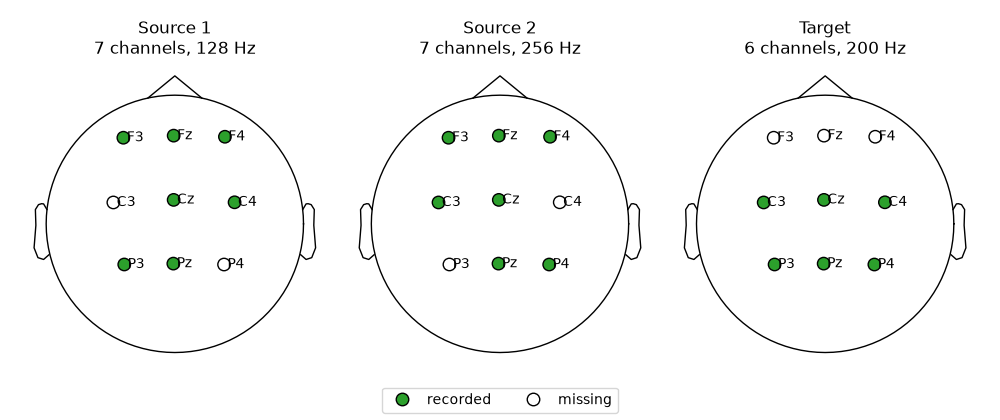
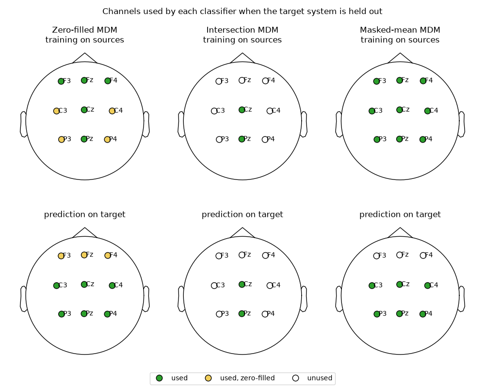
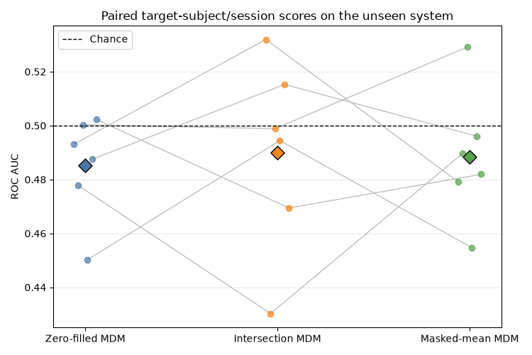
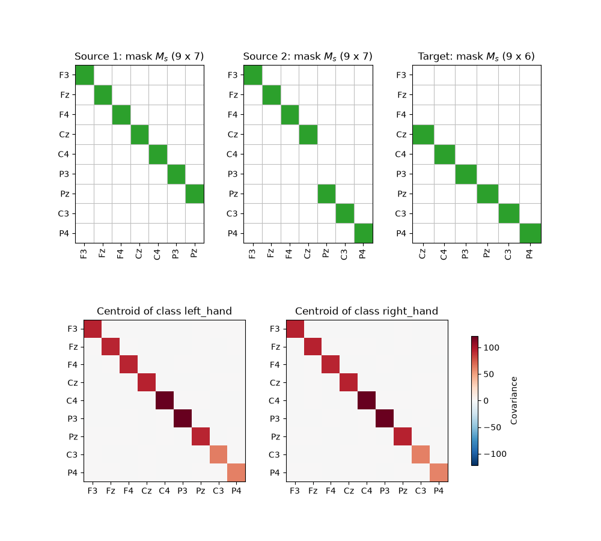

Note
Go to the end to download the full example code.
Cross-system transfer with minimum distance to masked mean#
A cross-system benchmark asks whether a model trained on several systems can generalize to a system it has never seen. A system is an acquisition setup: an EEG device with its own montage and sampling rate. The source systems do not necessarily share the same channels, neither with one another nor with the target system, and they usually record different subjects.
MOABB needs no dedicated evaluation for this. The datasets are pooled in a
CompoundDataset, the paradigm keeps
each trial with the channels and sampling rate of its device, and
CrossSubjectEvaluation holds out one device at a
time with cv_class=LeaveOneGroupOut, groups="device". The device
column of the metadata is the recording device, not the dataset: one dataset
can use several devices, and several datasets can share one.
This tutorial introduces the Minimum Distance to Mean (MDM) [1] classifier used with the Riemannian masked mean [2], which averages covariance matrices that are only partially observed. We will:
stack every system on the union of their channels;
describe the channels recorded by each system with a mask matrix;
estimate covariance matrices at the sampling rate of each system;
estimate class centroids with a masked mean of the covariance matrices;
compare this classifier with two simpler ways of handling missing channels.
# Author: Quentin Barthélemy
#
# License: BSD (3-clause)
import matplotlib.pyplot as plt
import mne
import numpy as np
from matplotlib.colors import ListedColormap
from matplotlib.lines import Line2D
from pyriemann.classification import MDM
from pyriemann.estimation import Covariances
from pyriemann.geometry.distance import distance_riemann
from pyriemann.geometry.mean import maskedmean_riemann
from sklearn import config_context
from sklearn.base import BaseEstimator, TransformerMixin
from sklearn.model_selection import LeaveOneGroupOut
from sklearn.pipeline import make_pipeline
from moabb.datasets.compound_dataset import CompoundDataset
from moabb.datasets.fake import FakeDataset
from moabb.evaluations import CrossSubjectEvaluation
from moabb.paradigms import LeftRightImagery
The cross-system transfer protocol#
We simulate three systems. The two source systems record seven channels each, but not the same ones. The target system records six channels: only Cz and Pz are recorded by both sources, while C3 and P3 are recorded by Source 1 only, and C4 and P4 by Source 2 only. The three systems also have different sampling rates.
Each simulated dataset is recorded with its own device, given by
device=; with real datasets the device column comes from their
METADATA. When the held-out device is the target, the pipeline is trained
on all trials of the other devices and scored on each subject/session of the
target device. Every trial is given as recorded, with the channels and the
sampling rate of its device: handling heterogeneous systems is the job of the
pipeline.
systems = {
"Source 1": {"channels": ("F3", "Fz", "F4", "Cz", "C4", "P3", "Pz"), "sfreq": 128},
"Source 2": {"channels": ("F3", "Fz", "F4", "C3", "Cz", "Pz", "P4"), "sfreq": 256},
"Target": {"channels": ("P3", "Pz", "P4", "C3", "Cz", "C4"), "sfreq": 200},
}
union = list(
dict.fromkeys(ch for system in systems.values() for ch in system["channels"])
)
datasets = {
name: FakeDataset(
["left_hand", "right_hand"],
channels=system["channels"],
sfreq=system["sfreq"],
n_subjects=n_subjects,
n_sessions=n_sessions,
seed=seed,
device=name,
)
for (name, system), n_subjects, n_sessions, seed in zip(
systems.items(), (3, 2, 3), (2, 3, 2), (42, 43, 44)
)
}
info = mne.create_info(union, sfreq=128, ch_types="eeg")
info.set_montage("standard_1020")
PRESENT, ABSENT = "#2CA02C", "white"
def plot_channels(ax, groups, title):
"""Plot the union channels on a head, one color per group of channels.
``groups`` is a list of ``(channel names, color, label)`` tuples.
"""
groups = [group for group in groups if len(group[0])]
mne.viz.plot_sensors(
info,
kind="topomap",
ch_groups=[[union.index(ch) for ch in channels] for channels, _, _ in groups],
cmap=ListedColormap([color for _, color, _ in groups]),
show_names=True,
axes=ax,
show=False,
pointsize=80,
linewidth=1,
)
ax.set_title(title)
def channel_legend(fig, entries):
handles = [
Line2D(
[], [], marker="o", linestyle="", markersize=9, markeredgecolor="k", color=c
)
for _, c in entries
]
fig.legend(handles, [label for label, _ in entries], loc="lower center", ncols=3)
fig, axes = plt.subplots(1, len(systems), figsize=(10, 4.2))
fig.subplots_adjust(left=0.02, right=0.98, top=0.86, bottom=0.12, wspace=0.05)
for ax, (name, system) in zip(axes, systems.items()):
recorded = system["channels"]
missing = [ch for ch in union if ch not in recorded]
plot_channels(
ax,
[(recorded, PRESENT, "recorded"), (missing, ABSENT, "missing")],
f"{name}\n{len(recorded)} channels, {system['sfreq']} Hz",
)
channel_legend(fig, [("recorded", PRESENT), ("missing", ABSENT)])
plt.show()

Channel union and mask matrices#
Masked covariance methods need a common channel space. Let \(p\) be the number of channels in the union of all systems. The first step of the pipelines zero-fills a trial recorded by a system with \(p_s\) channels on the missing channels, so that every trial is an array of \(p\) channels. Its covariance matrix \(C\) is therefore only meaningful on the recorded channels.
The recorded channels of system \(s\) are described by a semi-orthogonal mask matrix \(M_s \in \mathbb{R}^{p \times p_s}\), built from the columns of the identity matrix of the recorded channels. The masked covariance matrix \(M_s^\top C M_s\) is the \(p_s \times p_s\) covariance matrix of the recorded channels, which is SPD.
The masks are metadata, known from the montages of the devices: starting from the channel union, the mask of a system is 1 on the channels it records and 0 on the other channels of the union.
To place each training trial on the channel union, the first step of the
pipelines needs the device of each trial: it requests the device metadata
column, which MOABB routes to the steps asking for it through
scikit-learn’s metadata routing (set_fit_request(device=True); any
metadata column can be requested this way). At prediction, all trials come
from the held-out device: the one missing from the training devices.
class ChannelUnion(TransformerMixin, BaseEstimator):
"""Zero-fill the trials of each system on the channel union.
``montages`` maps each device to its channel names. The montage applied at
prediction is the one of the held-out device.
"""
def __init__(self, montages=None):
self.montages = montages
def fit(self, X, y=None, *, device=None):
if device is None:
raise ValueError("ChannelUnion needs the `device` metadata.")
self.channels_ = list(
dict.fromkeys(ch for channels in self.montages.values() for ch in channels)
)
self.target_ = held_out(self.montages, device)
return self
def fit_transform(self, X, y=None, *, device=None):
return self.fit(X, y, device=device)._stack(X, device)
def transform(self, X):
return self._stack(X, [self.target_] * len(X))
def _stack(self, X, systems):
X_union = np.empty(len(X), dtype=object)
for i, (trial, system) in enumerate(zip(X, systems)):
X_union[i] = np.zeros((len(self.channels_), trial.shape[-1]))
X_union[i][[self.channels_.index(ch) for ch in self.montages[system]]] = trial
return X_union
def held_out(devices, training_devices):
"""The device missing from the training devices."""
(device,) = set(devices) - set(training_devices)
return device
def channel_union():
with config_context(enable_metadata_routing=True):
return ChannelUnion(montages).set_fit_request(device=True)
Different sampling rates#
MOABB does not resample the systems: each trial is kept at the sampling rate of its system. Resampling is not needed either: covariance matrices only require that all trials cover windows of the same duration in seconds, and they have the same size whatever the number of time samples.
As the systems have different channels and numbers of time samples, MOABB
gives the trials as an object array, one array of shape
\((p_s, n_{times})\) per trial, and so does the channel-union step, with
arrays of shape \((p, n_{times})\). pyRiemann’s
Covariances expects trials of the same length,
so the estimator below applies it to the groups of trials of the same
length.
class TrialCovariances(Covariances):
"""Covariance matrices of trials with different numbers of time samples."""
def transform(self, X):
n_times = np.array([trial.shape[-1] for trial in X])
covs = np.empty((len(X), X[0].shape[0], X[0].shape[0]))
for n in np.unique(n_times):
covs[n_times == n] = super().transform(np.stack(X[n_times == n]))
return covs
Minimum distance to masked mean#
MDM represents each class \(k\) by the Riemannian mean \(G_k\) of its training covariance matrices. With partially observed matrices, the masked Riemannian mean [2] solves
where \(d_R\) is the affine-invariant Riemannian distance and \(M_i\) is the mask of the system of trial \(i\). Every source system thus contributes to the prototype on the channels it records, and \(G_k\) is defined on the complete channel union.
A target trial \(C\) is compared with the centroids on the target channels only, with the target mask \(M_t\):
The classifier receives the masks of the devices as a parameter. To know the
device of each training trial, and so the held-out device, it also requests
the device metadata.
The covariance matrices are estimated with the sample covariance matrix: a masked block of the covariance of zero-filled data is then exactly the covariance matrix of the recorded channels. A shrinkage estimator would mix in the zero-filled channels.
class MDMM(MDM):
"""Minimum distance to masked Riemannian mean.
``masks`` maps each device to its boolean mask on the channel union. The
mask applied at prediction is the one of the held-out device.
"""
def __init__(self, masks=None, metric="riemann", n_jobs=1):
super().__init__(metric=metric, n_jobs=n_jobs)
self.masks = masks
def _mask(self, system):
"""Semi-orthogonal mask matrix of a system."""
return np.eye(len(self.masks[system]))[:, self.masks[system]]
def fit(self, X, y, *, device=None):
if device is None:
raise ValueError("MDMM needs the `device` metadata.")
X, y = np.asarray(X), np.asarray(y)
self.classes_ = np.unique(y)
self.target_ = held_out(self.masks, device)
masks = [self._mask(d) for d in device]
self.covmeans_ = np.stack(
[
maskedmean_riemann(X[y == c], [m for m, yi in zip(masks, y) if yi == c])
for c in self.classes_
]
)
return self
def _predict_distances(self, X):
mask = self._mask(self.target_)
maskedX = mask.T @ np.asarray(X) @ mask
return np.stack(
[distance_riemann(maskedX, mask.T @ G @ mask) for G in self.covmeans_], axis=1
)
Two simpler baselines#
The first baseline ignores the masks: the MDM is trained on the covariance matrices of zero-filled data, estimated with a shrinkage estimator to keep them SPD. The centroids then mix systems whose zero-filled channels differ.
The second baseline keeps only the channels recorded by every source and by the target system: here, only Cz and Pz remain. It discards most of the spatial information, in particular the lateral C3 and C4 channels. The montages of the systems are known in advance, so the common channels are given to the pipeline as a parameter.
Note that none of these three methods applies a recentering of the covariances by subject.
class ChannelSelector(TransformerMixin, BaseEstimator):
"""Keep a subset of the channels of covariance matrices."""
def __init__(self, picks=None):
self.picks = picks
def fit(self, X, y=None):
return self
def transform(self, X):
return np.asarray(X)[:, self.picks][:, :, self.picks]
common = np.flatnonzero(np.all(list(system_masks.values()), axis=0))
with config_context(enable_metadata_routing=True):
mdmm = MDMM(masks=system_masks).set_fit_request(device=True)
pipelines = {
"Zero-filled MDM": make_pipeline(channel_union(), TrialCovariances("oas"), MDM()),
"Intersection MDM": make_pipeline(
channel_union(), TrialCovariances("scm"), ChannelSelector(common), MDM()
),
"Masked-mean MDM": make_pipeline(channel_union(), TrialCovariances("scm"), mdmm),
}
Channels used by each cross-system classifier#
When the target system is held out, the three classifiers do not use the same channels, neither to train on the source systems nor to predict the target trials:
the zero-filled MDM uses every channel of the union, including channels that are zero-filled because a source, or the target, does not record them;
the intersection MDM uses only the channels recorded by all systems;
the masked-mean MDM estimates its centroids on the whole union, each source contributing on the channels it records, and predicts on the channels recorded by the target system. It never uses zero-filled values.
ZERO_FILLED = "#F2CF5B"
source_masks = np.array([system_masks[name] for name in ("Source 1", "Source 2")])
target_mask = system_masks[target]
def channel_groups(used, zero_filled):
"""Split the union channels into recorded, zero-filled and unused ones."""
used, zero_filled = np.asarray(used), np.asarray(zero_filled)
names = np.asarray(union)
return [
(names[used & ~zero_filled], PRESENT, "used"),
(names[used & zero_filled], ZERO_FILLED, "used, zero-filled"),
(names[~used], ABSENT, "unused"),
]
everywhere = np.ones(len(union), dtype=bool)
nowhere = np.zeros(len(union), dtype=bool)
channel_usage = {
"Zero-filled MDM": (
channel_groups(everywhere, ~source_masks.all(axis=0)),
channel_groups(everywhere, ~target_mask),
),
"Intersection MDM": (
channel_groups(source_masks.all(axis=0) & target_mask, nowhere),
channel_groups(source_masks.all(axis=0) & target_mask, nowhere),
),
"Masked-mean MDM": (
channel_groups(source_masks.any(axis=0), nowhere),
channel_groups(target_mask, nowhere),
),
}
fig, axes = plt.subplots(2, len(channel_usage), figsize=(10, 8))
fig.subplots_adjust(
left=0.02, right=0.98, top=0.88, bottom=0.07, wspace=0.05, hspace=0.25
)
for col, (pipeline, (train_groups, test_groups)) in enumerate(channel_usage.items()):
plot_channels(axes[0, col], train_groups, f"{pipeline}\ntraining on sources")
plot_channels(axes[1, col], test_groups, "prediction on target")
fig.suptitle("Channels used by each classifier when the target system is held out")
channel_legend(
fig, [("used", PRESENT), ("used, zero-filled", ZERO_FILLED), ("unused", ABSENT)]
)
plt.show()

Run the cross-system benchmark#
The systems are deterministic FakeDataset
instances, which keep the tutorial fast and download-free. Their scores have
no scientific meaning; they are used to expose the complete evaluation path.
The three systems share the same epoch duration of 3 seconds. Their subjects
are pooled in one CompoundDataset,
and groups="device" holds out one device at a time: each device is the
target in turn, the pipeline seeing no trial of it during training.
paradigm = LeftRightImagery()
pool = CompoundDataset(
[
(ds, subject, None, None)
for ds in datasets.values()
for subject in ds.subject_list
],
code="CompoundDatasetCrossSystem",
interval=datasets["Target"].interval,
)
evaluation = CrossSubjectEvaluation(
paradigm=paradigm,
datasets=[pool],
cv_class=LeaveOneGroupOut,
groups="device",
overwrite=True,
suffix="cross_system_maskedmean",
)
results = evaluation.process(pipelines)
# The device of each pooled subject, to read the results per held-out device.
device_of = {i + 1: ds.device for i, (ds, *_) in enumerate(pool.subjects_list)}
results["device"] = results["subject"].astype(int).map(device_of)
print(
results.groupby(["device", "pipeline"])["score"]
.agg(["mean", "std", "count"])
.round(3)
)
mean std count
device pipeline
Source 1 Intersection MDM 0.503 0.015 6
Masked-mean MDM 0.504 0.022 6
Zero-filled MDM 0.501 0.023 6
Source 2 Intersection MDM 0.511 0.043 6
Masked-mean MDM 0.508 0.032 6
Zero-filled MDM 0.505 0.031 6
Target Intersection MDM 0.490 0.036 6
Masked-mean MDM 0.488 0.024 6
Zero-filled MDM 0.485 0.019 6
Inspect paired target results#
Each thin line below connects the three pipelines on the same target subject and session. The diamonds show pipeline means.
Do not interpret the ranking produced by FakeDataset: its labels contain
no physiological effect, so all methods fluctuate around chance. A proper
study would repeat the benchmark over real datasets recorded with different
devices, and use MOABB’s statistical-analysis utilities.
target_results = results[results["device"] == target]
paired = target_results.pivot(
index=["subject", "session"], columns="pipeline", values="score"
)
order = list(pipelines)
scores = paired[order].dropna().to_numpy()
colors = ["#4C78A8", "#F58518", "#54A24B"]
positions = np.arange(len(order))
offsets = np.linspace(-0.06, 0.06, len(scores))
fig, ax = plt.subplots(figsize=(7.5, 5))
for row, offset in zip(scores, offsets):
ax.plot(positions + offset, row, color="0.75", linewidth=1, zorder=1)
for position, color, values in zip(positions, colors, scores.T):
ax.scatter(position + offsets, values, color=color, alpha=0.7, zorder=2)
ax.scatter(
position,
values.mean(),
marker="D",
s=95,
color=color,
edgecolor="black",
zorder=3,
)
ax.axhline(0.5, color="black", linestyle="--", linewidth=1, label="Chance")
ax.set(
xticks=positions,
xticklabels=order,
ylabel="ROC AUC",
title="Paired target-subject/session scores on the unseen system",
)
ax.grid(axis="y", alpha=0.25)
ax.legend()
fig.tight_layout()
plt.show()

Masked-mean centroids and system masks#
To look at the class centroids \(G_k\) of the masked-mean MDM, we fit it on the two source systems, as in the benchmark: the trials of each system are zero-filled on the channel union, and their covariance matrices are averaged with the mask matrix \(M_s\) of their system.
The centroids are defined on the complete channel union, although no source records all of its channels. Each system only sees the block \(M_s^\top G_k M_s\) selected by its mask: the target system is classified on its own channels.
trials, labels, trial_systems = [], [], []
for name in ("Source 1", "Source 2"):
epochs, y, _ = paradigm.get_data(datasets[name], return_epochs=True)
trials += list(epochs.get_data() * datasets[name].unit_factor)
labels += list(y)
trial_systems += [name] * len(y)
X = np.empty(len(trials), dtype=object)
for i, trial in enumerate(trials):
X[i] = trial
X_union = ChannelUnion(montages).fit_transform(X, device=trial_systems)
covs = TrialCovariances("scm").transform(X_union)
centroids = MDMM(masks=system_masks).fit(covs, labels, device=trial_systems).covmeans_
fig = plt.figure(figsize=(10, 9))
grid = fig.add_gridspec(2, 6, height_ratios=(1.1, 1), hspace=0.45, wspace=0.9)
vmax = np.abs(centroids).max()
for col, (klass, centroid) in enumerate(zip(np.unique(labels), centroids)):
ax = fig.add_subplot(grid[1, 3 * col : 3 * col + 3])
image = ax.imshow(centroid, cmap="RdBu_r", vmin=-vmax, vmax=vmax)
ax.set(
xticks=range(len(union)),
yticks=range(len(union)),
xticklabels=union,
yticklabels=union,
title=f"Centroid of class {klass}",
)
fig.colorbar(image, ax=fig.axes, location="right", shrink=0.8, label="Covariance")
for col, name in enumerate(systems):
mask = system_masks[name]
ax = fig.add_subplot(grid[0, 2 * col : 2 * col + 2])
ax.imshow(
np.eye(len(union))[:, mask],
cmap=ListedColormap([ABSENT, PRESENT]),
vmin=0,
vmax=1,
aspect="auto",
)
ax.set(
xticks=range(mask.sum()),
yticks=range(len(union)),
xticklabels=np.asarray(union)[mask],
yticklabels=union,
title=f"{name}: mask $M_s$ ({len(union)} x {mask.sum()})",
)
ax.tick_params(axis="x", labelrotation=90)
ax.set_xticks(np.arange(mask.sum() + 1) - 0.5, minor=True)
ax.set_yticks(np.arange(len(union) + 1) - 0.5, minor=True)
ax.grid(which="minor", color="0.75", linewidth=0.8)
ax.tick_params(which="minor", length=0)
plt.show()

References#
Total running time of the script: (0 minutes 45.139 seconds)
Estimated memory usage: 709 MB
Run this example